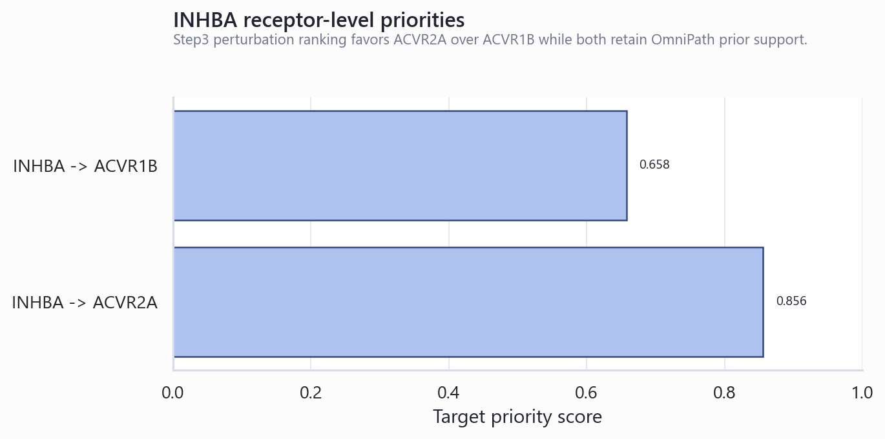
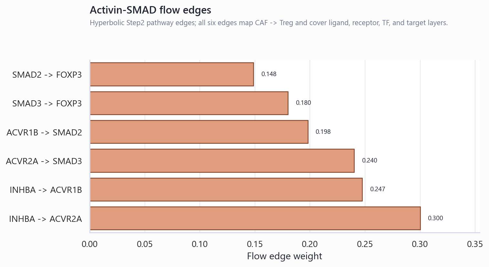
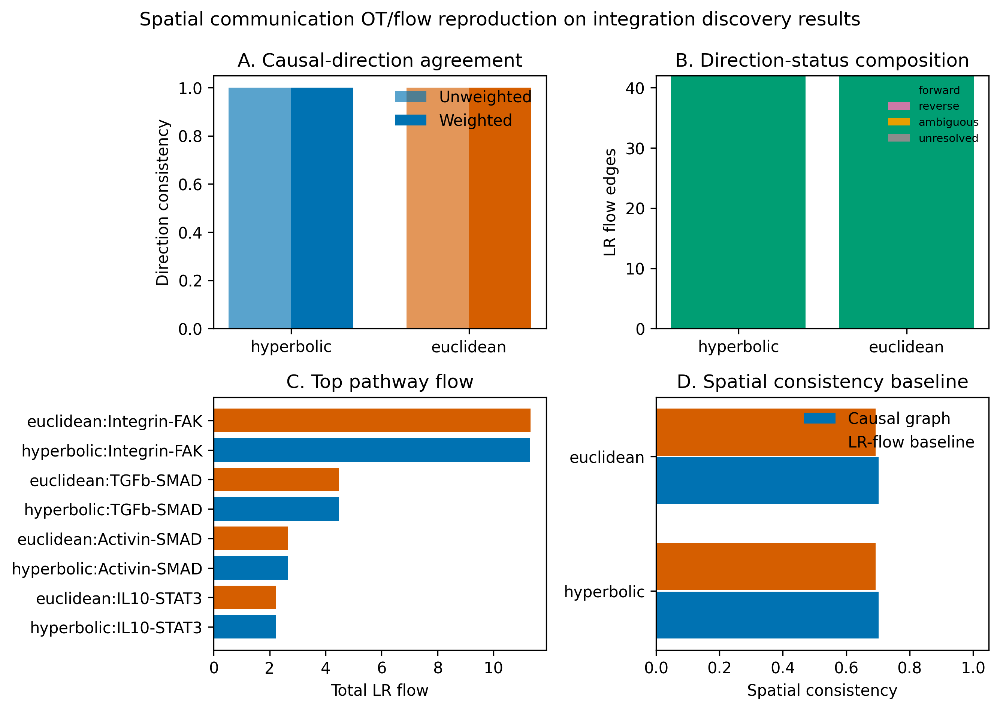

Activin / INHBA 靶点机制论证报告：结合 HyperSCA MSS 型结肠癌计算结果、本地 Zotero 文献与网络证据
摘要
本报告围绕 “Activin / INHBA 是否可作为 MSS 型结肠癌免疫抑制生态位中的候选干预靶点” 建立机制论证。证据层级以本地 HyperSCA 计算结果为主：整合 discovery/MVP 输出将 INHBA 排在候选靶点第 2 位，综合评分 0.792；Activin-SMAD 被重建为覆盖 ligand-receptor-TF-target 四层的 complete pathway，共 6 条 flow edges；反事实靶点排序中 INHBA→ACVR2A priority 为 0.856，INHBA→ACVR1B priority 为 0.658；空间通信 OT 复现显示 CAF/Fibroblast→Treg 的方向一致性为 1.0。文献层面，本地 Zotero 库与公开网络资料共同支持 INHBA/Activin A 在 CRC 进展、SMAD2/3 信号、Treg/FOXP3 免疫抑制和 PD-L1 阻断耐药中的生物学可解释性。但该证据链仍不能证明真实因果或湿实验有效，尤其需保留 root Step2/Step3 阴性结果、ACVR1B 表达缺失、Activin 通路在部分 MSS 肿瘤中可被遗传/表观遗传机制破坏等限制。
研究问题与证据边界
本报告回答三个层次的问题：第一，HyperSCA 刚才的计算结果是否支持 CAF-derived INHBA/Activin A → ACVR1B/ACVR2A → SMAD2/SMAD3 → FOXP3 的 CAF→Treg 轴；第二，本地 Zotero 文献库中是否存在与该轴一致的 CRC 或跨癌种机制证据；第三，网络公开文献是否补足 Activin 靶点在 MSS 型结肠癌中的受体、免疫抑制和可干预性论证。
检索与资料来源
| 来源层 | 检索/读取内容 | 用于本报告的角色 |
|---|---|---|
| HyperSCA 本地结果 | 读取 evidence_snapshot.json、flow edges、Step3 target priorities、OT reproduction、niche metrics、root Step2/Step3 caveats、Step4 summary。 |
主证据层；决定报告结论强弱和限制边界。 |
| Zotero 本地库 | 检索词包括 activin、INHBA、SMAD3 FOXP3、regulatory T colorectal cancer TGF beta。 |
本地文献库证据；确认用户已有文献中与 INHBA/Activin 相关的 CRC 和免疫机制论文。 |
| AnySearch | 可用子域识别成功；内容检索触发匿名配额耗尽。 | 记录为检索限制；没有保存新 API key，也没有将其作为证据来源。 |
| 网络公开来源 | 通过 PubMed/PLOS/Nature/Frontiers/Pathology & Oncology Research 等页面核查 Activin、INHBA、ACVR2A、FOXP3/Treg 与 ICB 相关证据。 | 外部机制一致性和反证补充。 |
HyperSCA 计算结果摘要


机制模型
综合本地计算和文献，当前最稳妥的机制表述为：
在 MSS 型 CRC 的整合空间生态位中，HyperSCA 将 INHBA 标记为高优先级候选靶点，并在 CAF/Fibroblast 到 Treg 的空间通信中复现了 Activin-SMAD 的正向流。该轴在文献上与 Activin A 的 TGF-β superfamily 身份、SMAD2/3 信号、FOXP3+ Treg 诱导、晚期 CRC 免疫抑制和 ICB 抵抗具有一致性。
1. 配体层：INHBA/Activin A 是可解释的上游信号源
本地 HyperSCA discovery 结果将 INHBA 排在第 2 位，score=0.792，并显示其富集生态位包括 MonocyteRich 与 FibroRich niche。flow edges 中 CAF→Treg 轴的 INHBA ligand expression 在本地整合表中为 5.077；OT 复现的高分边来自 Fibroblast_S1/S2/S3 到 T_cell_regulatory，提示该配体信号在 fibroblast-rich 空间结构中具有方向一致性。
文献层面，本地 Zotero 库中多条 CRC 记录支持 INHBA 在结肠癌中的高表达、预后关联或促增殖/迁移作用。Xiao 等 2022 的 Cell Death & Disease 论文显示 INHBA 是 CRC 细胞增殖相关的 metformin 靶点，并把 INHBA 放在 TGF-β/PI3K/AKT 信号解释框架内；该网页摘要还明确说明 INHBA 是 TGF-β superfamily 成员，两份 INHBA subunits 形成 activin A，并可经 serine/threonine kinase receptors 激活 SMAD2/SMAD3。公开页面还显示，敲低 INHBA 可降低 Smad2 磷酸化，过表达则相反，metformin 可降低 pSmad2/3 染色强度。
2. 受体层：ACVR2A/ACVR1B 是机制通路的必要但需分型核查节点
HyperSCA 结果中，INHBA→ACVR2A 的 flow_weight 为 0.300，Step3 target_priority_score 为 0.856，是本通路最强的配受体边；INHBA→ACVR1B 的 flow_weight 为 0.2475，priority 为 0.658。该结果支持将 ACVR2A 作为首选受体检查点，将 ACVR1B 作为并列但更需表达确认的 receptor node。
受体层的主要反证来自 MSS 结肠癌本身的异质性。Jung 等 2009 的 PLOS ONE 研究检测 51 个 MSS colon cancers，发现 7/51 失去 ACVR2、2/51 失去 ACVR1、5/51 失去 pSMAD2，且 ACVR2 loss 与 LOH 和 promoter hypermethylation 相关；结论是只有小比例 MSS 肿瘤失去 Activin signaling member 表达，但 ACVR2/ACVR1/pSMAD2 的缺失确实构成通路破坏机制。这意味着 HyperSCA 的 MSS 样本背景不能自动等同于“Activin 通路完整”，需要以样本级 ACVR2A/ACVR1B/pSMAD2 或空间 protein/RNA 检测补证。
3. 转录调控层：SMAD2/3→FOXP3 是 Treg 机制的可解释桥梁
HyperSCA 的完整流包括 ACVR1B→SMAD2→FOXP3 和 ACVR2A→SMAD3→FOXP3；其中 FOXP3 target expression 为 5.056，SMAD2/SMAD3 分支都在 CAF→Treg forward edge 中出现。PubMed 检索到的 Huber 等 2009 J Immunol 论文题名和摘要记录支持 Activin A 能促进 TGF-β induced conversion of CD4+CD25- T cells into Foxp3+ induced Treg；Tone 等 2008 Nat Immunol 题名记录支持 Smad3 与 NFAT 协同诱导 Foxp3 enhancer 活性。Frontiers 的 Activin A 免疫综述还概述了 Activin A 在适应性免疫中可类似 TGF-β 影响 T 细胞，并涉及 Activin A-iTreg 与 CD8 T cell 抑制等机制。
在 CRC 语境中，Frontiers 2022 的 CRC-infiltrating Treg 综述指出 CRC 肿瘤中 Treg 增多与肿瘤进展、免疫治疗失败和较差预后相关，但也强调 FOXP3+ T cells 在 CRC 中具有异质性，FOXP3lo non-Treg 与 FOXP3hi suppressive eTreg 的预后意义不同。因此，本报告不把 FOXP3 单一表达当作免疫抑制的充分证明，而将其作为需要联合 CD25、CTLA4、IL10/TGFB、TSDR demethylation 或功能抑制实验确认的 Treg 端点。
4. 空间生态位层：HyperSCA 支持 CAF/Fibroblast→Treg 的空间方向一致性
OT reproduction 是本报告中最重要的空间证据：hyperbolic mode 下 Activin-SMAD 的 n_edges=6，total_flow=2.652，top_source=Fibroblast_S1，top_target=T_cell_regulatory，causal_forward_count=6，direction_consistency_rate=1.0；euclidean mode 中同一路径的 direction consistency 也为 1.0。三条高分 hyperbolic top edges 均为 INHBA/ACVR2A/SMAD3/FOXP3 从 Fibroblast_S1/S2/S3 指向 T_cell_regulatory。

公开 CRC 空间证据与该方向一致。Wiley 等 2025 的 Scientific Reports 研究使用 DSP 分析 stage II/III CRC，报告 stage III activin-positive AOIs 与 mitogenic signaling、proliferation、immunosuppression 相关，并显示 activin-positive stage III 区域中 CD25、FOXP3、PD-1、CD163、FAP-α 等标记升高。该证据不能证明 CAF→Treg 因果，但支持 “activin-rich tissue area 与免疫抑制/Treg 标志物共定位” 这一空间解释。
5. 免疫治疗层：Activin/INHBA 有 ICB 抵抗与可干预性的外部支持
本地 Zotero 和网络均检索到 Li 等 2025 Acta Pharmacologica Sinica 论文。该研究显示 INHBA/activin A 与抗肿瘤免疫和 PD-L1 blockade 反应相关：在 CT26 等小鼠肿瘤模型中，INHBA 过表达削弱 atezolizumab 抗肿瘤效果，INHBA 缺失增强疗效；机制上，INHBA 下调 IFN-γ signaling、降低 CXCL9/CXCL10 分泌并削弱效应 T 细胞浸润；Activin A 特异性抗体 garetosmab 与抗 PD-L1 联用优于单药。这为 Activin/INHBA 作为 ICB 增敏靶点提供了较直接的前临床支持。
跨癌种的 CAF-Treg 机制支持来自 Hu 等 2024 npj Precision Oncology：INHBA+ CAFs 在卵巢癌中与 Tregs 富集相关，Activin A 中和抗体减少肿瘤进展与促肿瘤基质/巨噬细胞浸润；人 CAF 与 T 细胞共培养显示 Treg differentiation 依赖 INHBA+ CAF 直接接触，且 INHBA/recombinant Activin A 通过 SMAD2-dependent signaling 诱导 CAF autocrine PD-L1 并促进 Treg differentiation。该证据与 HyperSCA 的 CAF-derived INHBA→Treg 轴高度同构，但属于跨癌种证据，不能直接替代 CRC 湿实验。
证据强度矩阵
| 命题 | HyperSCA 证据 | 本地/网络文献证据 | 强度判断 |
|---|---|---|---|
| INHBA 是 MSS CRC 整合分析中的高优先级候选靶点 | rank #2；score=0.792；causal=1.0；spatial=0.86；niche=0.7。 | 本地 Zotero 中 Li 2020、Guo 2021、Wang 2022、Xiao 2022 均支持 INHBA 与 colon/CRC 进展或预后相关。 | 强 作为计算优先级和 CRC 生物学候选。 |
| INHBA/Activin A 可通过 ACVR2A/ACVR1B 激活 SMAD2/3 | complete Activin-SMAD；6 edges；ACVR2A priority=0.856；ACVR1B priority=0.658。 | Xiao 2022 页面说明 INHBA forms activin A 并激活 SMAD2/3；PLOS 2009 支持 ACVR2/ACVR1/pSMAD2 是 MSS CRC 中需核查的通路节点。 | 强 作为通路可解释性；需样本级受体确认。 |
| CAF/Fibroblast→Treg 方向成立 | OT reproduction direction_consistency_rate=1.0；top_source Fibroblast_S1；top_target T_cell_regulatory。 | CRC DSP 显示 activin+ stage III 区域与 FOXP3/CD25/PD-1/FAP-α 等免疫抑制标记共定位；卵巢癌 INHBA+ CAF 研究提供直接 CAF-Treg 机制类比。 | 中-强 空间方向支持较强；真实细胞间因果仍待实验。 |
| FOXP3 是 Activin-SMAD 轴的 Treg 端点 | SMAD2/3→FOXP3 两条分支均出现；FOXP3 target expression=5.056。 | Huber 2009 支持 Activin A 增强 TGF-β 诱导 Foxp3+ iTreg；Smad3/NFAT 文献支持 Foxp3 enhancer 调控；CRC Treg 综述支持 Treg/FOXP3 与免疫逃逸关系但强调异质性。 | 中 机制合理；FOXP3 单标志物不足。 |
| Activin/INHBA 是 ICB 增敏靶点 | HyperSCA 提供 IFNG context 与 ICB-related discovery 背景，但不是疗效证明。 | Li 2025 在 CT26/MC38 等模型中支持 INHBA/Activin A 抑制 IFN-γ signaling 并诱导 anti-PD-L1 resistance，garetosmab 联用 anti-PD-L1 有前临床效果。 | 中 前临床支持明确；MSS CRC 临床转化仍未知。 |
| 当前本地结果已经证明 Activin 是湿实验有效靶点 | 没有。root Step2 未找回 CAF→Treg(INHBA)，root Step3 INHBA n_candidates=0；Step4 INHBA active_nodes 为空。 | 文献也主要支持机制和前临床可能性。 | 不成立 只能作为优先验证靶点。 |
冲突证据与限制
- root Step2/Step3 与 integration discovery 不一致。 标准 root Step2 的 known_axis_recall=0.0，CAF→Treg(INHBA) 未找回，原因是缺失 CAF/Treg node type；root Step3 INHBA 没有候选配受体结果。报告结论应以 integration/MVP discovery 为主，但必须把 root 输出作为不一致证据。
- ACVR1B 表达需要重点确认。 flow edge 中 INHBA→ACVR1B 的 receptor_expr 为 0.0，而 ACVR2A receptor_expr 为 0.620。因而现阶段 ACVR2A 分支比 ACVR1B 分支更稳健。
- MSS 状态不保证 Activin signaling 完整。 PLOS 2009 显示小比例 MSS 肿瘤也会因 ACVR2/ACVR1/pSMAD2 loss、LOH 或 promoter hypermethylation 发生 Activin signaling disruption。因此需要在当前样本中做 ACVR2A/ACVR1B/pSMAD2 的表达和空间定位确认。
- FOXP3/Treg 表型存在 CRC 特异异质性。 CRC 中 FOXP3+ 细胞可包含非抑制性 FOXP3lo non-Treg 与 suppressive FOXP3hi eTreg，单独 FOXP3 表达不能证明功能性免疫抑制。
- 跨癌种 CAF-Treg 机制不能直接外推。 INHBA+ CAF 直接促进 Treg differentiation 的最强机制证据来自卵巢癌模型；其与 CRC 的共同点是 CAF/ECM-rich TME 和 Activin/SMAD2/3，但仍需 CRC 样本验证。
- 反事实与动态干预是模型模拟。 Step3 的 cf_quality 很高，但其含义是反事实输出的数值质量和传播拟合，并非真实药物扰动；Step4 中 INHBA final_mean_effect=1.0 但 active_nodes 为空，不能解读为动态治疗效果已被证明。
实验验证建议
| 优先级 | 实验问题 | 推荐验证 | 判读标准 |
|---|---|---|---|
| P0 | 当前 MSS CRC 样本中 CAF 是否为 INHBA 主要来源，且邻近 Treg？ | RNAscope/ISH 或 spatial transcript/protein 共染：INHBA + CAF markers(FAP/ACTA2/COL1A1) + FOXP3/CD25/CTLA4。 | INHBA+ CAF 区域与 FOXP3hi/CD25+ Treg 富集或邻近；最好做距离/邻域统计。 |
| P0 | ACVR2A/ACVR1B/SMAD2/3 分支是否可用？ | 检测 Treg 或 CD4 T cell compartment 中 ACVR2A/ACVR1B RNA/protein，刺激 Activin A 后测 pSMAD2/3。 | ACVR2A 阳性且 pSMAD2/3 响应可被 Activin neutralization 或 receptor inhibitor 阻断。 |
| P1 | INHBA/Activin 是否促进 Treg differentiation 或 suppressive phenotype？ | CAF-T cell 共培养，干预 INHBA knockdown、Activin A neutralizing antibody、recombinant Activin A，检测 FOXP3hi/CD25/CTLA4/IL10/TGFB 与 suppression assay。 | 阻断 INHBA/Activin 后 Treg differentiation 或抑制功能下降；外源 Activin A 可部分救援。 |
| P1 | Activin 靶向是否提高 ICB 反应？ | MSS CRC organoid-immune co-culture 或 syngeneic mouse model，anti-Activin A ± anti-PD-1/PD-L1。 | 组合治疗提高 CD8 infiltration、IFN-γ/CXCL9/CXCL10，并降低 Treg/CAF immunosuppressive markers。 |
| P2 | HyperSCA 预测边是否稳定？ | 对 Visium/CosMx/VisiumHD 分平台重复 flow/OT/niche 分析，按 stage、MSS/MSI、CAF subtype 分层。 | INHBA→ACVR2A→SMAD3→FOXP3 方向一致性在多个平台和样本中保留。 |
结论
结合刚才的 HyperSCA 计算结果，Activin/INHBA 是当前 MSS 型结肠癌分析中最值得优先推进的机制靶点之一。其理由不是单一文献或单一模型分数，而是多层证据一致：INHBA 在 integration discovery 中排名第 2 且得分 0.792；Activin-SMAD 被重建为 complete pathway；INHBA→ACVR2A 是最强配受体优先边；空间 OT 复现支持 Fibroblast/CAF→Treg 正向流；公开 CRC DSP 和 ICB 前临床研究支持 Activin/INHBA 与免疫抑制、FOXP3/CD25、PD-1/PD-L1 和 IFN-γ axis 相关。
最稳健的靶点推进口径应为：“INHBA/Activin A 是 HyperSCA 在 MSS CRC fibroblast-rich / monocyte-rich 生态位中优先提出的 CAF→Treg 免疫抑制轴候选干预节点，首选验证分支为 INHBA→ACVR2A→SMAD3→FOXP3。” 目前不应写成“已经证明 Activin 是 MSS CRC 有效治疗靶点”；下一步必须用样本级 ACVR2A/ACVR1B/pSMAD2、INHBA+ CAF 与 FOXP3hi Treg 空间邻近、以及 Activin neutralization 功能实验来闭环。
本地 Zotero 文献库证据
| Zotero key | 文献 | 与本报告的关系 |
|---|---|---|
| 7CJRJQDE | Li et al., 2020, BMC Cancer, DOI: 10.1186/s12885-020-06743-2 | INHBA 是 colon adenocarcinoma 预后预测因子。 |
| 9S3RNAJX | Guo & Liu, 2021, J Int Med Res, DOI: 10.1177/03000605211014998 | INHBA 促进 colon cancer cell proliferation/migration/invasion，经 VCAN 相关机制。 |
| Z4UTTIC8 | Xiao et al., 2022, Cell Death & Disease, DOI: 10.1038/s41419-022-04649-4 | INHBA 是 CRC 中 metformin 抗增殖效应的靶点，并连接 TGF-β/SMAD 与 PI3K/AKT。 |
| IT7IMHLH | Wang et al., 2022, J Clin Lab Anal, DOI: 10.1002/jcla.24539 | BHLHE40 介导 INHBA 上调并促进 colon cancer proliferation/migration。 |
| SWJNUJ5H | Li et al., 2025, Acta Pharmacologica Sinica, DOI: 10.1038/s41401-024-01381-x | INHBA/Activin A 抑制 IFN-γ signaling 并诱导 anti-PD-L1 resistance；支持可干预性。 |
| 5VQJTJEW | Pinjusic et al., 2022, Journal for ImmunoTherapy of Cancer, DOI: 10.1136/jitc-2022-004533 | 跨癌种支持 Activin-A 抑制 CD8 T cell-mediated immunity 和 ICI response。 |
| FKNQKECQ | Hu et al., 2024, npj Precision Oncology, DOI: 10.1038/s41698-024-00523-y | 跨癌种直接支持 INHBA+ CAF、SMAD2-dependent signaling、PD-L1 与 Treg differentiation。 |
网络来源
- Xiao Q. et al. Metformin suppresses the growth of colorectal cancer by targeting INHBA to inhibit TGF-β/PI3K/AKT signaling transduction. Cell Death & Disease, 2022. https://www.nature.com/articles/s41419-022-04649-4
- Li F-l. et al. INHBA promotes tumor growth and induces resistance to PD-L1 blockade by suppressing IFN-γ signaling. Acta Pharmacologica Sinica, 2025. https://www.nature.com/articles/s41401-024-01381-x
- Wiley M.B. et al. Activin A affects colorectal cancer progression and immunomodulation in a stage dependent manner. Scientific Reports, 2025. https://www.nature.com/articles/s41598-025-91853-9
- Jung B. et al. Activin Signaling in Microsatellite Stable Colon Cancers Is Disrupted by a Combination of Genetic and Epigenetic Mechanisms. PLOS ONE, 2009. https://journals.plos.org/plosone/article?id=10.1371/journal.pone.0008308
- Refaat B. et al. Profiling Activins and Follistatin in Colorectal Cancer According to Clinical Stage, Tumour Sidedness and Smad4 Status. Pathology & Oncology Research, 2021. https://www.por-journal.com/journals/pathology-and-oncology-research/articles/10.3389/pore.2021.1610032/full
- Hu Y. et al. INHBA(+) cancer-associated fibroblasts generate an immunosuppressive tumor microenvironment in ovarian cancer. npj Precision Oncology, 2024. https://www.nature.com/articles/s41698-024-00523-y
- Frontiers review: Colorectal Cancer-Infiltrating Regulatory T Cells. https://www.frontiersin.org/journals/immunology/articles/10.3389/fimmu.2022.903564/full
- Frontiers review: Different Immunoregulation Roles of Activin A Compared With TGF-β. https://www.frontiersin.org/journals/immunology/articles/10.3389/fimmu.2022.921366/full
- Huber S. et al. Activin A promotes the TGF-beta-induced conversion of CD4+CD25- T cells into Foxp3+ induced regulatory T cells. J Immunol, 2009. PubMed: https://pubmed.ncbi.nlm.nih.gov/19342638/
- Tone Y. et al. Smad3 and NFAT cooperate to induce Foxp3 expression through its enhancer. Nature Immunology, 2008. PubMed: https://pubmed.ncbi.nlm.nih.gov/18157133/